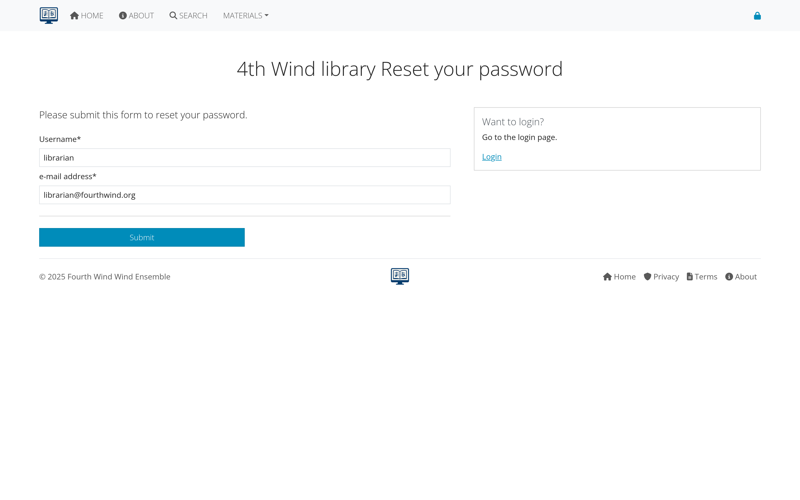

Getting Access to AllanaCrusis
This section covers user registration, account management, and understanding the different user roles and permissions in AllanaCrusis.
Table of Contents
- User Registration
- User Roles and Permissions
- Login Process
- Email Verification
- Password Management
- Account Settings
User Registration
How to Get an Account
User accounts are typically created by:
- System administrators - for organizational members
- Self-registration - if enabled by your organization
- Invitation system - through email invitations
Registration Process
If self-registration is available:
- Click “Register” on the login page
- Fill out the registration form:
- Username (unique identifier)
- Email address
- Password (meeting security requirements)
- Full name
- Organization affiliation (if applicable)
- Submit the form
- Check your email for verification message
- Click the verification link
- Account is now active
 Figure 1: User registration form with required information
Figure 1: User registration form with required information
Registration Requirements
- Valid email address: Must be accessible for verification
- Strong password: Usually 8+ characters with mixed case and numbers
- Unique username: Cannot duplicate existing users
- Organization approval: May require administrator approval
User Roles and Permissions
AllanaCrusis uses a role-based permission system with four main user types:
Guest User (No Account Needed)
What Guests Can Do:
- View public compositions and information
- Use basic search functionality
- Browse publicly available content
- Read about the organization and system
What Guests Cannot Do:
- Download files
- Edit any content
- Access member-only features
- View private compositions
 Figure 2: Interface view for guest users
Figure 2: Interface view for guest users
Member
Additional Permissions:
- Access to part downloads (if enabled)
- View contact information
- Access member-only compositions
- Use advanced search features
- View detailed composition information
Typical Users:
- Ensemble members
- Students
- Community musicians
- General library users
 Figure 3: Enhanced interface for logged-in members
Figure 3: Enhanced interface for logged-in members
Librarian
Full Library Management:
- Add, edit, and delete compositions
- Manage parts and instrumentation
- Upload and organize files
- Create and edit supporting data
- Access all content management functions
- Generate reports and analytics
Cannot Do:
- User management (add/remove users)
- System configuration changes
- Access administrative settings
Typical Users:
- Music librarians
- Ensemble managers
- Content administrators
 Figure 4: Librarian interface with content management tools
Figure 4: Librarian interface with content management tools
Manager
Complete System Control:
- All librarian permissions
- User management (add, edit, delete users)
- System configuration access
- Administrative settings
- Security and access control
- System maintenance functions
Typical Users:
- System administrators
- Organization leadership
- IT staff
- Primary librarians
 Figure 5: Manager interface with full administrative access
Figure 5: Manager interface with full administrative access
Login Process
Standard Login
- Navigate to the login page
- Enter your username or email
- Enter your password
- Click “Login”
Login Troubleshooting
Common Issues:
- Incorrect credentials: Check username/email and password
- Account not verified: Check email for verification link
- Account disabled: Contact your administrator
- Forgotten password: Use password reset feature
 Figure 6: Standard login form
Figure 6: Standard login form
Session Management
- Automatic logout: After period of inactivity
- Remember me: Option to stay logged in longer
- Multiple devices: Can be logged in on different devices
- Security alerts: Notifications for unusual activity
Email Verification
Why Email Verification is Required
- Security: Confirms you own the email address
- Communication: Ensures you receive important notifications
- Password reset: Enables secure password recovery
- Account recovery: Helps with lost account access
Verification Process
- Register your account or request verification
- Check your email (including spam/junk folders)
- Click the verification link in the email
- Confirmation page appears
- Account is now verified and fully active
 Figure 7: Email verification message and confirmation
Figure 7: Email verification message and confirmation
Troubleshooting Email Verification
If you don’t receive the email:
- Check spam/junk folders
- Verify email address is correct
- Request a new verification email
- Contact administrator if problems persist
If the link doesn’t work:
- Try copying and pasting the full URL
- Check if the link has expired
- Request a new verification email
- Use a different browser
Password Management
Password Requirements
Most systems require:
- Minimum 8 characters
- Mix of uppercase and lowercase letters
- At least one number
- Special characters (optional but recommended)
- Not a common password or dictionary word
Password Reset Process
If you forget your password:
- Click “Forgot Password” on the login page
- Enter your email address
- Check your email for reset instructions
- Click the reset link in the email
- Enter your new password (twice for confirmation)
- Submit the form
- Login with your new password
 Figure 8: Password reset request and new password form
Changing Your Password
To change your password while logged in:
- Go to Account Settings (usually in user menu)
- Click “Change Password”
- Enter current password
- Enter new password (twice)
- Save changes
- Confirmation message appears
Password Security Tips
- Use unique passwords for each system
- Consider a password manager
- Don’t share passwords with others
- Change passwords regularly
- Use two-factor authentication if available
Account Settings
Profile Information
You can typically update:
- Display name
- Email address (may require re-verification)
- Contact information
- Notification preferences
- Time zone and locale settings
Notification Settings
Control what emails you receive:
- System announcements
- New composition notifications
- Account security alerts
- Password expiration warnings
- Weekly/monthly summaries
 Figure 9: Account settings with profile and notification options
Figure 9: Account settings with profile and notification options
Privacy Settings
Depending on your organization:
- Profile visibility to other users
- Contact information sharing
- Activity tracking preferences
- Data retention settings
Getting Help with Access Issues
Common Problems and Solutions
Can’t create an account:
- Check if registration is open to your organization
- Verify email domain is allowed
- Contact administrator for invitation
Account locked or disabled:
- Contact your system administrator
- May be due to multiple failed login attempts
- Could be administrative action requiring review
Email not working:
- Update email address in account settings
- Check with IT about email delivery issues
- Verify your email system accepts external emails
Who to Contact
- Technical issues: System administrator
- Account permissions: Librarian or manager
- Organization policies: Administrative staff
- General questions: User documentation or help desk
Next Steps
Once you have access:
- Learn about Supporting Data - Understand the organizational structure
- Explore Compositions - See how musical works are managed
- Try Advanced Search - Use your member access for enhanced features
Continue to the next section: Supporting Data to learn about instruments, ensembles, and organizational setup.